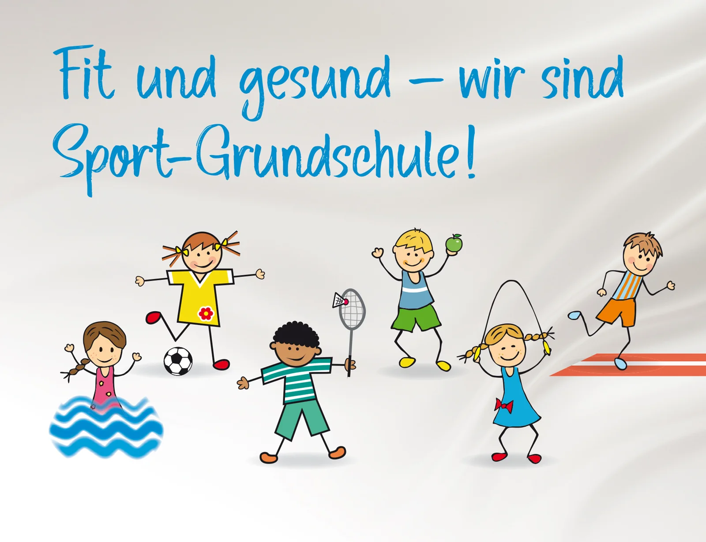
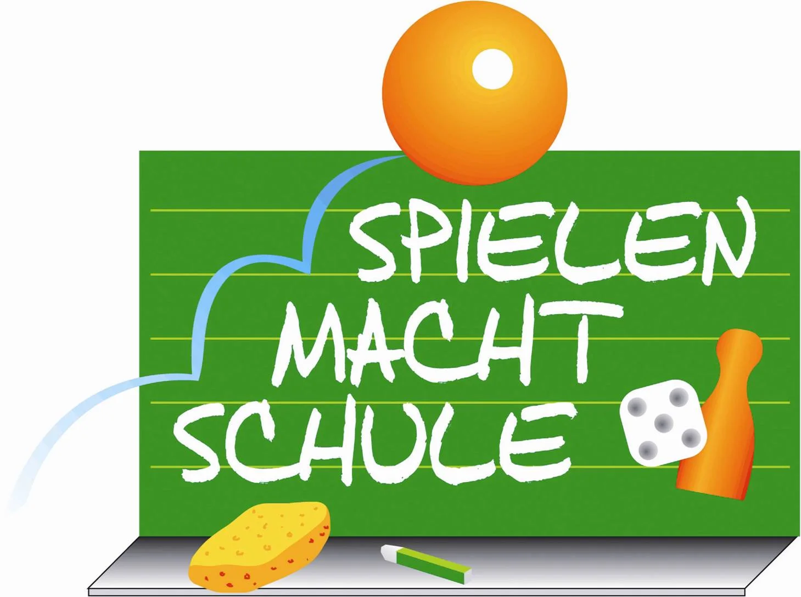
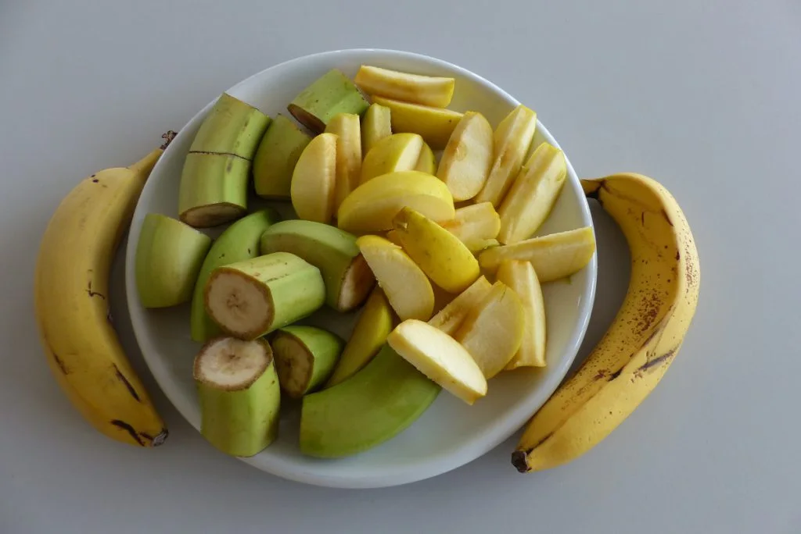
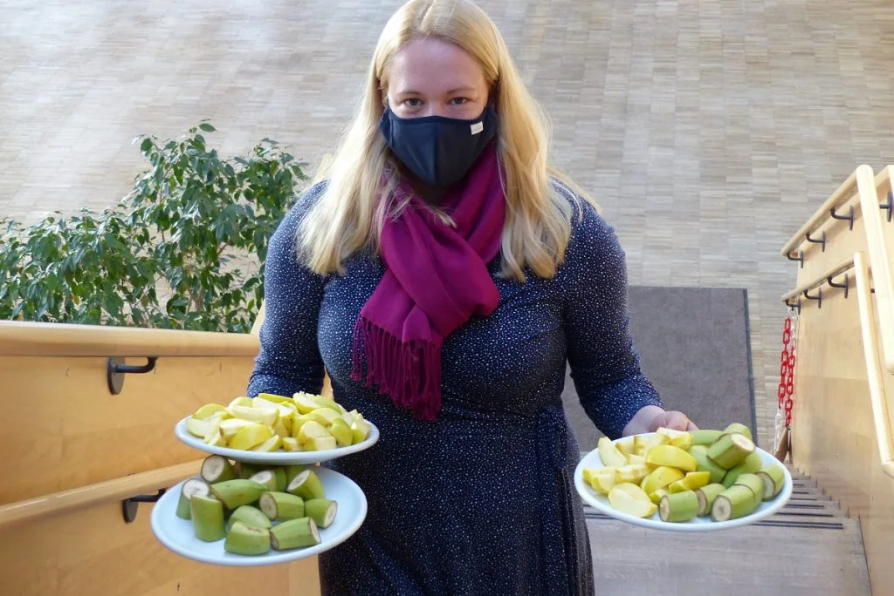

Unsere Schule
Unser Schulhaus steht am Ortsrand von Unterbiberg, direkt am Hachinger Bach. Hier kennen sich die Kinder auch über die eigene Klasse hinaus.

So lernen wir
- Lesen, Schreiben, Rechnen. In den ersten beiden Jahren nehmen wir uns dafür besonders viel Zeit. Auf eine gut lesbare Schrift legen wir Wert.
- Selbstständig arbeiten. Die Kinder suchen Informationen, arbeiten mit Tablets und stellen ihre Ergebnisse vor. Zum Lesen nutzen wir auch Antolin.
- Passende Hilfe. Die Lehrkräfte einer Jahrgangsstufe stimmen sich ab. Lese- und Lernpaten, Deutschförderung und Schulbegleitungen helfen mit.
- Regelklasse und Ganztag. In jeder Jahrgangsstufe gibt es je eine Klasse.
So halten wir zusammen
- Die Drittklässler übernehmen Patenschaften für unsere Erstklässler. Bei gemeinsamen Aktionen und Ausflügen lernen sie einander kennen.
- Wenn es Streit gibt, nehmen wir uns Zeit. Wir hören zu und suchen mit den Kindern nach einer Lösung.
- Die Schulsozialarbeit unterstützt uns dabei.
Spielen, Sport und Ausflüge
- 2022 wurden wir als Sportgrundschule ausgezeichnet. Bei „Spielen macht Schule“ war unsere Schule ebenfalls erfolgreich.
- Ob Tischspiele, Arbeitsgemeinschaften, Büchertausch oder Fußball auf dem Schulhof: Für all das gibt es bei uns Platz.
- Unsere Ausflüge führen etwa in den Umweltgarten, ins Walderlebniszentrum, ins Deutsche Museum und ins Lenbachhaus. Puppentheater, SchulKinoWoche und Schullandheim waren auch schon dabei.
Praktikum bei uns
Lehramtsstudierende der LMU begleiten den Unterricht. Sie helfen zum Beispiel bei Gruppenarbeiten und kleinen Forscherprojekten.

Sport-Grundschule 
Spielen macht Schule


Unser Team
Wer leitet die Schule, wer hilft im Sekretariat und wer unterrichtet welche Klasse? Hier finden Sie die Ansprechpersonen für das Schuljahr 2026/27.
- Schulleitung
- Christiane Bussert
- Stellvertretende Schulleitung
- Christiane Klaus
- Sekretariat
- Marion Steinmaier
- Hausmeister
- Gordon Wenzel
- Klassenleitung 1a
- Sonja Bauer
- Klassenleitung 1b
- Anna Maria Peplow
- Klassenleitung 2a
- Eva Fellinger
- Klassenleitung 2b
- Christiane Klaus
- Klassenleitung 3a
- Hanna Schrüfer
- Klassenleitung 3b
- Birgit Tafelmair-Strunden
- Klassenleitung 4a
- Pamela Schaufler
- Klassenleitung 4b
- Silke Printz
Beiträge zu diesem Thema
Gesunde Schule
Zum Schulalltag gehören Bewegung, gemeinsames Essen und Zeit zum Ausruhen.
Was auf den Tisch kommt
- Aus unserer Küche. Das Mittagessen wird im Schulhaus gekocht.
- Schulobst und Schulmilch. Kinder und Eltern helfen beim Waschen, Schneiden und Verteilen. Die Küche verwendet auch einen Teil der Milch.
- Vom Schulacker. Wir säen, pflegen und ernten Gemüse, Kartoffeln und Kräuter. Beim Kochen und bei „Captain Clever“ sprechen wir auch über Zucker und ausgewogene Ernährung.
Was den Kindern guttut
- Sport-AGs, Bewegungsparcours, Leichtathletik in Klasse 4 und der Spendenlauf „Kinder laufen für Kinder“.
- Kunst und Musik als Ausgleich. Im Ruheraum dürfen Kinder lesen, leise spielen oder sich ausruhen.
- Sozialtraining und Streitschlichtung mit der Schulsozialarbeit.


Schulobst vorbereiten 
Kartoffeln vom Schulacker